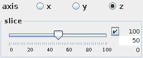
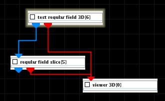
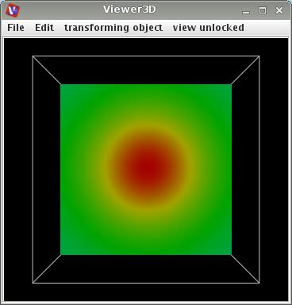

REGULAR FIELD SLICE
The regular field slice extracts a 2D slice from a 3D regular field. The slice plane can only be orthogonal to a coordinate axis.
Input data
The input must contain a regular 3D field.
Output data
At output the module gives a regular 2D 3-space field with affine geometry and a 3D geometry object of the output field.
Computation parameters

The axis radio button panel defines the slice plane direction orthogonal to x-, y- or z-axis.
The slice slider picks the slice position. Default is a value in the middle between minimum and maximum slice position. If check box on the right hand side is on the user is able to change minimum, maximum and current value typing in the values into the text field on the right hand side.
Presentation parameters
Presentation tab contents are described in the common interfaces section unter the Presentation Panel entry.
Example

Choose the test regular field 3D module from the test objects library, the regular field slice module from the 3D field mappers library and connect them. In the regular field slice GUI choose multipole as color component.
